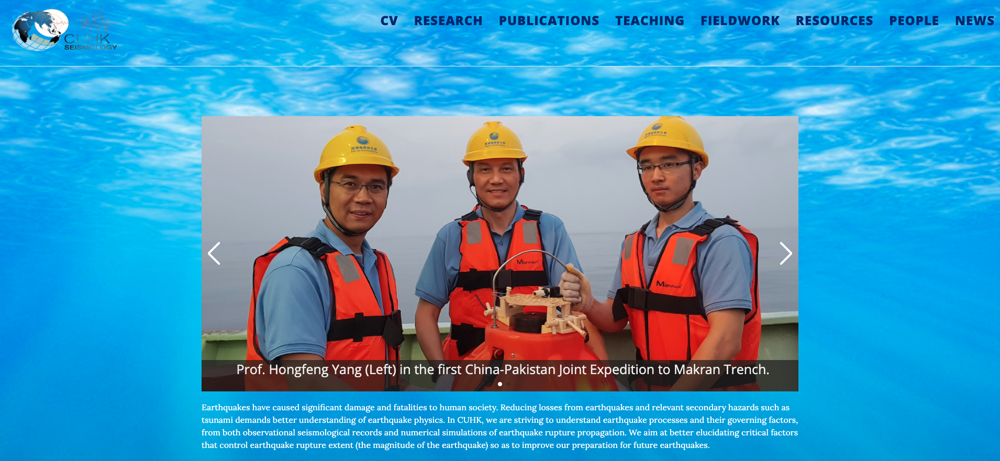

Memberships
SEG, PAPG, AAPG, AGU
Student member: Society of Exploration Geophysicists (2016-2022)
Student member: European Association of Geoscientists and Engineers (EAGE)��
Student representative for earth-system physics, ICTP, Italy.
Experience
under progress ...
Useful links



Seismology Tutorial -Yang's group at CUHK
News
/under progress.
The link provides Aqeel Abbas's resume. Resume
Link to my LinkdIn Aqeel LinkdIn